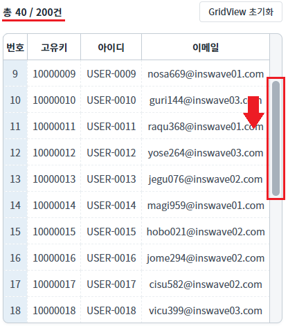
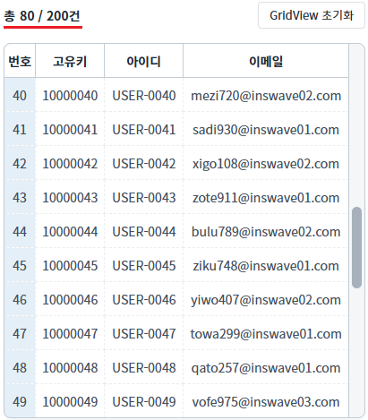
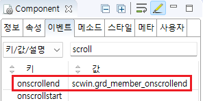

GridView의 'onscrollend' 이벤트를 사용하여 데이터를 마지막 행에 추가하는 예제입니다. GridView의 세로 스크롤이 (마지막 행 건수 - 10건)의 높이에 위치하면 40건씩 데이터가 추가되며, 최대 200건의 데이터가 로드됩니다.
세로 스크롤이 '마지막 행 건수 - 10건'의 높이에 위치하면 40건씩 데이터 추가하기
1
STPE 1: 그리드뷰의 세로 스크롤 이동하기
마우스를 사용하여 그리드뷰의 세로 스크롤을 아래로 내립니다.
Image 1.브라우저(Chrome) 실행 예시

2
STEP 2: 결과 확인하기
세로 스크롤이 바닥(전체 건수 - 10건)에 위치하면 40건의 데이터가 추가됩니다. 최대 200건까지 추가됩니다.
Image 2.브라우저(Chrome) 실행 예시

'loadCount' 속성을 설정하여 미리 데이터를 로드하는 것을 추천합니다.
[필수] loadCount="10"
onscrollend 이벤트를 발생에 필요한 남은 행의 수. 세로 스크롤이 하단에 닿은 후 본 속성으로 설정한 값만큼의 행이 남아 있는 경우, onscrollend 이벤트가 발생합니다.
'onscrollend'의 이벤트 핸들러를 정의합니다. 예제 파일에서는 핸들러로 사용할 메소드명을 다음과 같이 정의하였습니다. onscrollend : scwin.grd_member_onscrollend //세로 스크롤이 하단에 닿을 때 발생합니다.
Image 3.웹스퀘어 스튜디오의 Component View - 이벤트 설정 예시

스크립트 탭에서 핸들러를 정의합니다.
Example 1.Script
/** * grd_Member의 onscrollend 핸들러 * 데이터를 추가합니다. */ scwin.grd_member_onscrollend = function() { var startRow = dlt_Member.getRowCount(); //그리드뷰와 연결된 DataList의 행 수 반환받기 // DataList의 행의 수가 200건보다 작을 경우에만 추가 조회합니다. if (200 > startRow) { //추가할 데이터를 호출할 로직 구성. } };
onscrollend
loadCount